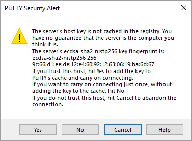
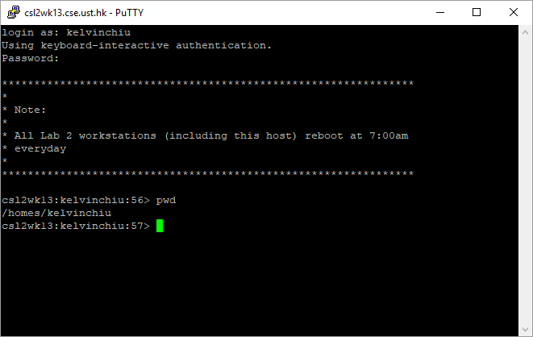
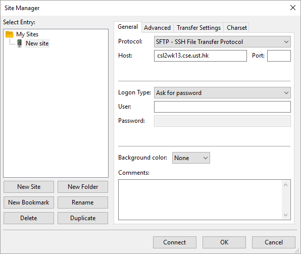
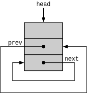
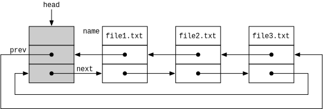

COMP 2012H Honors Object-Oriented Programming and Data Structures
Assignment 2 Gitlite
Announcements
- Updated October 15: Description for the branch command was updated. Description for the merge command was updated: Step 6 becomes Step 4.
- Updated October 15: Deadline was postponed to October 22. Two new test cases on the merge command were available on ZINC. See Test Cases. Download the latest skeleton files to obtain the new test cases. See Resources.
- Updated October 12: The failure check at merge step 6 was ambiguous and now the expected behavior is given explicitly.
-
Updated October 11: Test cases of
list_put()using commits were added. See Test Cases. -
Updated October 10: A bug with case-sensitive filesystem was fixed for
write_file()inUtils.cpp. This affected WSL and Linux users only. A memory-leak bug was fixed formerge()inRepository.cpp. As a result, program skeleton and demo programs were updated. See Resources to download the latest version. -
Updated October 10: Page 17 (reset) of
pa2-diagrams.pdfwas updated. See Resources to download the latest version. -
Updated October 8: A bug related to regular expression was fixed in
Tester.cpp. A bug that prevents files in conflict from saving when doing merge was fixed inRepository.cpp. As a result, program skeleton and demo programs were updated. See Resources to download the latest version. - Updated October 8: A set of diagrams that illustrate object relationships was provided. See Resources.
- Updated October 8: ZINC test cases for Part 2 have been released. See Test Cases.
- Updated October 8: Section on Memory Leak was updated, including the method to check for memory leak yourself. Some ZINC test cases for Part 1 now also check for memory leak. See Test Cases.
- Updated October 8: Descriptions for the test cases of the automated testing module were provided. See Automated Testing to learn how to make your own test cases.
- Updated October 3: Test cases for linked list operations are available on ZINC. See Submission & Grading and Test Cases.
Honor Code
We value academic integrity very highly. Please read the Honor Code section on our course webpage to make sure you understand what is considered as plagiarism and what the penalties are. The following are some of the highlights:
- Do NOT try your "luck" - we use sophisticated plagiarism detection software to find cheaters. We also review codes for potential cases manually.
- The penalty (for BOTH the copier and the copiee) is not just getting a zero in your assignment. Please read the Honor Code thoroughly.
- Serious offenders will fail the course immediately, and there will be additional disciplinary actions from the department and university, upto and including expulsion.
Objectives & Intended Learning Outcomes
The objective of this assignment is to provide you with practice on structures, pointers, linked lists and dynamic memory allocation and deallocation. Upon completion of this assignment, you should be able to:
- Define and use structure variables
- Manipulate pointer variables
- Implement a linked list
- Manipulate dynamic memory objects

Introduction
In this assignment, you are going to implement a version control system (VCS) that resembles Git. Our version is basically a simplified version of Git, and thus it is named Gitlite . You may have heard of GitHub, which is an web service that is based on Git. If you have submitted code to GitHub, then you must have used Git (although you may not be aware of this).
People use version control system to keep track of the changes of files they wish to maintain. Essentially, version control systems maintain different versions of the same file that exist at various time, or different versions of the same file that exist simultaneously. Version control systems are an integral part in software development. In the upcoming project of this course, you may want use Git (and GitHub) to facilitate collaboration and versioning. Watch this video to know more on version control systems.
-
Git Concepts
It would be helpful to be familiar with Git concepts before you start working on this assignment. You can refer to the official guide from Git or any Git introduction online. But here we provide a brief introduction to essential concepts.
A repository is the database of a version control system. A repository tracks a file if it maintains the version of the file. The tracked files of the repository are the files that are tracked by the repository. Untracked files are the files that are not maintained by the repository.
A commit records a snapshot, or the state of the repository. Each commit therefore records the content of the tracked files of the repository when the commit was made. Initially, the repository is empty and hence there exists an initial commit that tracks no files.
Files can be changed in three ways: a new file is added, the content of an existing file is modified, and a file is deleted. To record changes to the repository, the changes are staged: For adding a new file or modifying an existing file, the file is added to the staging area, where the current content is saved. Bear in mind that the staging area only contains the version of the file when it was staged. If a file is modified after staging, the changes are not recorded in the repository unless the file is staged again. For deleting a file, it is removed from the tracked files.
When a new commit is made, only the staged changes are recorded. For other tracked files, they inherit from the previous commit. The previous commit becomes the parent commit of the new commit. As a result, the repository maintains a history of commits where files can be restored from, which is referred as checkout.
A sequence of commits is referred as a branch. A branch is associated with a head commit. The commit sequence of the branch is obtained by following the parent commits starting from the head commit of the branch. A branch can be checked out. This restores all files from the head commit of that branch and change the tracked files to be those tracked by the head commit as well.
The history of changes recorded by different branches can be merged together. This is essential in software development: Software developers work on the project by committing to their own branch. Ultimately, they would merge their work into the master branch which has the combined product of the developers.
-
File Fingerprinting
To support versioning, we need an efficient way to determine whether two versions are different. In other words, we wish to generate "fingerprints" for files such that we can check the fingerprints to determine whether two file versions are different.
To achieve this, we compute the SHA-1 value of file contents. SHA-1 is a cryptographic hash function that produces a hash value with 160 bits. Usually, we represent the hash values using 40-digit hex strings (since a hex digit represents 4-bit binary value):
SHA-1 for "Gitlite": 4ed6b233fe07f0b956e3460e9774f7bfd25d5b7c SHA-1 for "gitlite": ddf639cf894badea22b7b7370dc677dedd404ff7Cryptographic hash functions have the property that it is difficult to generate two inputs that have the same hash value. So we can say that given two file versions, the probability that their hash values are equal is one divided by two to the power of 160, which is negligible. Thus, we can simply check whether two hex strings are the same to determine whether two files versions are identical.
A third-party library, TinySHA1, is utilized to compute SHA-1 values. You don't need to understand and use this library as helper functions have been implemented to use this library (See Compilation to see how we can compile Gitlite with external libraries).
-
Storing Persistent Data
Gitlite requires some data structures representing the state of the repository to be maintained persistently across different executions of Gitlite. For example, one may use Gitlite to make a commit. When he runs Gitlite the next time, the commit should not be lost.
To achieve this, Gitlite maintains a
.gitlitedirectory which stores the data structures of Gitlite (See Appendix for the structure of the.gitlitedirectory). Helper functions have been implemented to perform all filesystem operations which use thefilesystemfeature from C++17. A third-party library, cereal is used for serializing objects upon filesystem operations (See Compilation to see the compilation requirements of Gitlite). -
Differences with Git
Since Gitlite is a simplified version of Git, there exists many subtle difference with Git. These will be mentioned when the Gitlite commands to implemented are described. If you are a sophisticated Git user, pay attention to these differences and make sure you implement the expected behavior of Gitlite.
Code Structure
File Structure
Here is the file structure of the program skeleton (See Resources to download the program skeleton).
pa2/
├── auto-testing/
│ ├── src/
│ └── tests/
├── include/
│ ├── TinySHA1.hpp*
│ └── cereal/
├── Commit.cpp*
├── Commit.h*
├── Makefile
├── Repository.cpp*
├── Repository.h*
├── Tester.cpp*
├── Tester.h*
├── Utils.cpp*
├── Utils.h*
├── gitlite.cpp*
├── gitlite.h*
└── main.cpp*
-
Commit.h: defines the data structure of Gitlite. -
Commit.cpp: contains the linked list operations to implement in Part 1, and some helper functions for Part 2. -
gitlite.h/.cpp: contains the Gitlite commands to implement in Part 2. -
Repository.h/.cpp: contains the wrapper functions of the Gitlite commands that handle most filesystem operations, especially those that deal with the.gitlitedirectory. -
Utils.h/.cpp: contains general helper functions you may use. -
Tester.h/.cpp: the automated testing module. -
auto-testing/: the directory of the automated testing environment. Contains test cases and related files. -
include/: the directory that contains the two third-party libraries used in Gitlite. You do not need use them directly.-
TinySHA1is employed to compute SHA-1 hash values for files and commits. Helper functions have been implemented inUtils.cppthat invokes functions from this library. -
cerealis employed to serialize objects when writing objects to file (and de-serialize objects when reading from file).
-
-
Makefile: the Makefile to build Gitlite (See Compilation).
You only need to submit Commit.cpp and gitlite.cpp (See Submission & Grading).
-
Data Structure
The following data data structures are defined in
Commit.hand are essential in Gitlite.-
Blob stands for Binary Large Object. We use
Blobobject as the common data structure to represent files and branches.struct Blob { string name; string ref; Commit *commit = nullptr; Blob *prev = nullptr, *next = nullptr; };-
When it represents a file,
namestores the filename,refstores the SHA-1 hash value in hex string. This hash value is used by the wrapper functions to refer to the saved copy of the file in the repository (See Appendix for the directory structure of.gitlite).commitis unused. -
When it represents a branch,
namestores the name of the branch,commitpoints to the head commit of the branch.refis unused.Blobobjects do not own commits, so no need to free the commit when freeing a Blob. -
prevandnextare pointers to the previous and next element in the linked list.
-
When it represents a file,
-
Listis a circular linked list with sentinel node ofBlobobjects. Implementation of linked list operations is the task of Part 1.struct List { Blob *head = nullptr; };-
All
Blobobjects in a linked list are always either represents a file or a branch, but not both.
-
All
-
Commitobjects are abstractions of commits.struct Commit { string message; string time; string commit_id; Commit *parent = nullptr, *second_parent = nullptr; List *tracked_files = nullptr; };-
messageis the commit message. -
timeis the time string of when the commit was made. -
commit_idis the commit id that uniquely identifies the commit. We compute the commit using the SHA-1 hash value of the commit message and time. This is done by a helper function. -
parentpoints to the parent commit. It isnullptronly if it is the first commit, referred as the initial commit, of the repository. -
second_parentpoints to the second parent commit, which exists only for the commit created after merging two branches. Otherwise, it isnullptr. -
tracked_filesis the linked list ofBlobobjects representing the files tracked by the repository when this commit was made. Different commits do not share sameBlobobjects. If a tracked file is identical in two commits, the twoBlobobjects in each of the commit have the samerefvalue. - Note: Since commit id uses hash value, two different commits with the same message and the same time have the identical commit id. You can assume this never occurs in grading. Also, during testing, make sure you do not use the same commit message for commits that will be taken during a short interval.
-
-
Blob stands for Binary Large Object. We use
Part 1: Linked List Operations (20 points)
Implement the following helper functions in Commit.cpp that operate on linked lists. Since linked list operations are essential in Gitlite, ZINC testcases are provided for you to check the correctness of linked list operations before proceeding to Part 2.
-
List *list_new();- Create a new empty circular doubly linked list with sentinel node (See Appendix).
- Return: The new empty linked list.
- All following helper functions operate on circular doubly linked list with sentinel node.
-
void list_push_back(List *list, Blob *blob);- Insert the given blob to the end of the linked list. (See Appendix Example 2 for the expected result)
- The linked list owns the blob after insertion. (No deep copy is required)
-
Both
listandblobare notnullptr.
-
Blob *list_find_name(const List *list, const string &name);- Find the blob with the given name in the linked list.
-
Return: A pointer to the found blob, or
nullptrif no blobs were found. -
listis notnullptr. - There is at most one blob with the given name in the linked list.
-
Blob *list_put(List *list, const string &name, const string &ref); Blob *list_put(List *list, const string &name, Commit *commit);-
Put a blob with the given name and content (ref or commit) to the linked list.
- If a blob with the same name exists in the linked list, update the blob by replacing the content (ref or commit) with the given content (ref or commit).
- If no blobs with the same name exists in the linked list, create a new blob with the given content (ref or commit) and insert it to the linked list with the name following ascending lexicographic order.
-
Lexicographic order of two strings can be determined by the comparison operators
<and>. Basically, ifa < b, thenashould appear beforebin the linked list. (Blobs in Example 2 in Appendix follow lexicographic order) - The names of existing blobs in the linked list follow ascending lexicographic order.
- Return: A pointer to the new or updated blob.
- Recall that a blob is a shared data structure to represent either a file or a branch.
- The linked list owns the new blob after insertion. Updated October 3: The blob does not own the commit after creation or update. (No deep copy is required)
-
Both
listandcommitare notnullptr. - There is at most one blob with the given name in the linked list.
-
Put a blob with the given name and content (ref or commit) to the linked list.
-
bool list_remove(List *list, const string &target)- Remove the blob with the target name from the linked list (if found) and free its memory.
-
Return:
trueif a blob with the target name was found and removed.falseif no blobs with the target name were found. -
listis notnullptr. - There is at most one blob with the target name in the linked list.
-
int list_size(const List *list);- Return: The number of blobs in the linked list, excluding the sentinel node.
-
listis notnullptr.
-
void list_clear(List *list);- Remove all blobs from the linked list and free their memory, except the sentinel node. (See Appendix Example 1 for the expected result)
-
listis notnullptr.
-
void list_delete(List *list);- Delete the linked list and free all associated memory.
-
listis notnullptr. -
listis guaranteed not be used in subsequent operations.
-
void list_replace(List *list, const List *another);- Replace the linked list with the given another linked list, maintaining the order of blobs. Deep copy the blobs in the process.
- When removing blobs, free their memory.
- The two linked lists should not share the blobs with each other.
- No need to copy commits when copying blobs. (New and existing blob should share the same commit).
-
Both
listandanotherare notnullptr. -
listandanotherdo not refer to the same linked list.
-
List *list_copy(const List *list);- Deep copy the given linked list, maintaining the order of blobs.
- The new copy of the linked list should not share the blobs with the original linked list.
- Return: The new copy of the linked list.
- No need to copy commits when copying blobs. (New and existing blob should share the same commit).
-
listis notnullptr.
Part 2: Gitlite Commands (80 points)
Implement following Gitlite commands by completing the corresponding functions.
These functions are called by wrapper functions already implemented in Repository.cpp. Unless specified, the wrapper functions handle all filesystem operations to the .gitlite directory. For some commands, you need manipulate files in the current working directory. See Utils.cpp for related helper functions.
When Gitlite is started, the wrapper functions would read from the .gitlite directory and construct the following variables that are also passed as parameters to the functions you need to implement. When the functions return, wrapper functions would write the changes of these variables to the .gitlite directory. Therefore, a primary task of this part is to manipulate the following variables according to the Gitlite commands. The following variables, combined, can be considered as the state of the repository.
-
List *tracked_files: The currently tracked files of the repository, and their saved content.-
Each node in the linked list is a blob object representing a file. The
namefield holds the name of the file. Thereffield records the hash of the saved file that is used by wrapper functions to retrieve the actual content of the saved file. Thecommitfield is unused. - A file is said to be currently tracked by the repository if and only if the filename exists in this list.
- When a change is staged (adding a file, updating a file or removing a file), the content of this linked list is updated.
- When a commit is made, it records a snapshot of the tracked files of the repository and their saved content.
-
Each node in the linked list is a blob object representing a file. The
-
List *staged_files: The staging area of the repository. Contains the saved content of changed tracked files since the head commit of the repository.-
Each node in the linked list is a blob object representing a file. The
namefield holds the name of the file. Thereffield records the hash of the saved file that is used by wrapper functions to retrieve the actual content of the saved file. Thecommitfield is unused. - When a change is staged for addition (adding a file or updating a file), the content of this linked list is updated.
- After making a commit, the staging area is cleared.
-
Each node in the linked list is a blob object representing a file. The
-
List *branches: The branches that exist in the repository.-
Each node in the linked list is a blob object representing a branch. The
namefield holds the name of the branch. Thecommitfield points to the head commit of the branch (the latest commit of the branch). Thereffield is unused.
-
Each node in the linked list is a blob object representing a branch. The
-
Blob *current_branch: The current branch of the repository.-
This is a pointer to one of the nodes in
branches. - When a branch is switched, this pointer is updated.
-
This is a pointer to one of the nodes in
-
Commit *head_commit: The head commit of the repository. Also the head commit of the current branch (Since Gitlite does not support detached head). Also the latest commit made on the current branch.- This is a pointer to the latest commit of the current branch.
-
This is identical to
current_branch->commit. - When a new commit is made, this pointer is updated.
- When a branch is switched, this pointer is updated.
-
head_commit->tracked_filescontains the tracked files and their saved content at the head commit of the repository.
The wrapper functions also read from the current working directory to construct the following variable. This variable is also passed as a parameter to the functions you need to implement. When the functions return, the content of this variable is ignored.
-
List *cwd_files: The files in the current working directory (CWD).- Each node in the linked list is a blob object representing a file in the current working directory. The
namefield holds the name of the file. Thereffield andcommitfield are unused.
- Each node in the linked list is a blob object representing a file in the current working directory. The
In particular, the wrapper functions use the linked list operations you have implemented in Part 1 to build linked lists. The above linked lists are created using list_new(), and populated using list_put(), such that names (filenames or branch names) are sorted in ascending lexicographic order. You may want to verify the linked list operations before you proceed.
-
init
Initialize a repository
void init(Blob *¤t_branch, List *&branches, List *&staged_files, List *&tracked_files, Commit *&head_commit);- Usage:
gitlite init -
Description:
-
Initialize the linked lists:
branches,staged_files,tracked_files. -
Create the initial commit with message
initial commit. Set the time string and compute the hash. This commit tracks no files (initializecommit->tracked_filesas well) and has no parents. -
Create a branch called
masterand set it as the current branch. Add the initial commit to the branch. Set the head commit of the repository as well.
-
Initialize the linked lists:
-
Hints:
- Remember that you have already implemented linked list operations in Part 1. We expect you to use them in Part 2.
-
See
Utils.cppfor some useful functions. -
All output messages in Part 2 are available as constant strings in the top of
gitlite.cpp.
-
Notes:
- Parameters are passed by reference. The changes in this function are visible by the wrapper function after this function returns.
- This function always succeed. When it returns, the wrapper function would add the commit pointed by
head_committo the global list of commits, create a.gitlitedirectory in the current working directory, and save the newly initialized data structures to this directory. - Attempt to initialize in a directory with a
.gitlitedirectory would fail with the message:A Gitlite version-control system already exists in the current directory.This is handled by the wrapper function. - The rest of Gitlite commands requires an initialized
.gitlitedirectory. If Gitlite cannot find an initialized.gitlitedirectory, it would printNot in an initialized Gitlite directory.and terminates immediately. This is handled by the wrapper function.
-
Differences from Git:
- Git does not explicitly create the initial commit.
-
In Git, the name of the first branch is not fixed to
master.
- Usage:
-
add
Add content of a file to the repository
bool add(const string &filename, List *staged_files, List *tracked_files, const Commit *head_commit);- Usage:
gitlite add [filename] -
Description:
- Add content of the file to the repository by saving the content of the file to the currently tracked files of the repository.
-
Perform one of the following:
-
In most cases, simply save the content of the file to the staging area as well. Return
true. -
If the file is tracked in the head commit of the repository, with the same content as the current file, then remove the file from the staging area (if it is staged). Return
false. (This happens when a modified file was added, then restored to original version, and added again. Since the file was restored, it should be removed from the staging area.)
-
In most cases, simply save the content of the file to the staging area as well. Return
-
Hints:
tracked_filesstores the currently tracked files of the repository and their saved content.head_commit->tracked_filescontains the tracked files of the repository and their saved content at the head commit of the repository.- See
Utils.cppfor some useful helper functions. - Remember that you have already implemented linked list operations in Part 1. We expect you to use them in Part 2.
- Added October 13: You should use
list_put()to add files to the list such that the name follows ascending lexicographic order.
-
Notes:
- This is known as staging the file for addition. The file is now staged for addition. Staging an already staged file overwrites previous results.
- Before this function is called, the wrapper function ensures the file specified by
filenameexists in the current directory. Otherwise, the wrapper function would reportFile does not exist. - When this function returns, the wrapper function would make filesystem operations to the
.gitlitedirectory to save a copy of the file and update the index for staging area. The saved copies are identified by the hash value, such that only one copy is save for different file versions with the same content.
-
Differences from Git:
- Gitlite only tracks files in the current directory, while Git can track files in sub-directories. So the tracked files in Git forms a tree, while linked list is sufficient to represent tracked files in Gitlite.
- Usage:
-
commit
Take a snapshot the repository such that it can be restored later
bool commit(const string &message, Blob *current_branch, List *staged_files, List *tracked_files, Commit *&head_commit);- Usage:
gitlite commit [message] -
Description:
-
Failure check: If there are no files in the staging area, and no files staged for removal, print
No changes added to the commit.and returnfalse. - Create a new commit. Save the message, time and commit id.
- Take a snapshot of the repository by copying the tracked files of the repository to the tracked files of this commit. These files become the files that are tracked by this commit.
- Add this commit to the current branch and update the head commit of the repository.
-
Clear the staging area and return
true.
-
Failure check: If there are no files in the staging area, and no files staged for removal, print
-
Hints:
- See
Utils.cppfor some useful helper functions. - To make a snapshot, should you do shallow copy or deep copy?
- A file is staged for removal if it is tracked by the head commit of the repository but not currently tracked by the repository. (See remove).
- See
-
Notes:
- The staging area is cleared because a new commit is made. Now there are no files that are changed since the head commit of the repository.
- For best practices, the commit message should describe the changes introduced in this commit.
- If this function returns
true, the wrapper function would add the commit pointed byhead_committo the global list of commits, and make filesystem operations to the.gitlitedirectory to write changes to filesystem.
- Usage:
-
remove
Remove a file from the current working directory and the repository
bool remove(const string &filename, List* staged_files, List *tracked_files, const Commit *head_commit);- Usage:
gitlite rm [filename] -
Description:
- If the file is tracked by the head commit of the repository, then remove it from the currently tracked files of the repository and remove the file from the current working directory (if it exists). The file is staged for removal.
- If the file was staged for addition, remove it from the tracked files of the repository and the staging area.
-
If none of the above is satisfied, print
No reason to remove the file.and returnfalse. Otherwise, returntrue.
- Hints:
- See
restricted_delete(filename)inUtils.cppfor deleting a file from filesystem.
- See
-
Notes:
- This command may remove existing files.
-
If this function returns
true, the wrapper function would make filesystem operations to the.gitlitedirectory to remove index for staging area.
- Usage:
-
log
Display the log of previous commits
void log(const Commit *head_commit);- Usage:
gitlite log -
Description:
- Starting from the head commit of the repository, display information for each commit backwards until the initial commit, by following the parent commit (ignore second parents).
- Display the log in the following format:
=== commit fd0efd44873699357e2a452ec8f17e79ac965e4c Date: Thu Jul 22 22:23:56 2021 Another commit message === commit 61db0df36b222c7acc910b2dec40e5461e4041cb Date: Thu Jul 22 22:23:31 2021 A commit message === commit 0ed4cfc32f3478a10c755c5c8cca980b14c54f17 Date: Thu Jul 22 22:22:50 2021 initial commit -
Hints:
-
See
commit_print(commit)inCommit.cppfor displaying information of a commit.
-
See
- Notes:
- Usage:
-
status
Display the status of the repository
void status(const Blob *current_branch, const List *branches, const List *staged_files, const List *tracked_files, const List *cwd_files, const Commit *head_commit);- Usage:
gitlite status -
Description:
Display the status according to the following format: (Example updated October 13)
=== Branches === another-branch *master === Staged Files === staged_file.txt === Removed Files === gone.txt === Modifications Not Staged For Commit === changed.txt (modified) file1.txt (modified) file2.txt (deleted) file3.txt (modified) file4.txt (deleted) missing.txt (deleted) === Untracked Files === files.untracked-
Branches: Display the names of all branches. Marks the current branch with
*. - Staged Files: Display the filenames of all files that are staged for addition.
- Removed Files: Display the filenames of all files that are staged for removal.
-
Modifications Not Staged For Commit: Display the filenames for the following files. Append
(modified)for case 1 and 2. Append(deleted)for case 3 and 4.- Unstaged files that are tracked in the head commit of the repository, but the content recorded in the commit is different with the content in the current working directory (CWD).
- Files that were staged for addition, but the content recorded in the staging area is different with the content in CWD.
- Files staged for addition but deleted in CWD.
- Files not staged for removal but tracked in the head commit of the repository and deleted in CWD.
- Untracked Files: Files exist in CWD but not currently tracked by the repository.
- Entries in each group should be listed in ascending lexicographic order. The
*of current branch does not count.
-
Branches: Display the names of all branches. Marks the current branch with
-
Hints (Updated October 13):
cwd_filesstores the files located in the currently working directory. Use this to find out untracked files.get_sha1(filename)returns the hash of the file version in CWD.is_file_exists(filename)checks whether a file exists in CWD.- A file is staged for removal if it is tracked by the head commit of the repository but not currently tracked by the repository. (See remove).
- For Modifications Not Staged For Commit, traverse
tracked_filesto see whether each file matches one of the 4 conditions.
-
Notes:
- The linked list are created by the wrapper function using
list_put(). Filenames and branch names follow ascending lexicographic order iflist_put()is implemented correctly.
- The linked list are created by the wrapper function using
- Usage:
-
checkout file
Restore a file from a given commit (or the head commit of the repository)
bool checkout(const string &filename, Commit *commit);- Usage:
gitlite checkout -- [filename]orgitlite checkout [commit_id] -- [filename] -
Description:
-
Failure check:
-
If
commitisnullptr, then the wrapper function cannot find the commit with the commit id. PrintNo commit with that id exists.and returnfalse. -
If the file is not tracked by the commit, print
File does not exist in that commit.and returnfalse.
-
If
- Take the version of the file as it exists in the given commit and write the content to the current working directory. Overwrite any existing file.
- No need to update the currently tracked files of the repository and the staging area. Return
true.
-
Failure check:
-
Hints:
- See
write_file(filename, ref)for writing the content referred byrefto the file in filesystem.
- See
-
Notes:
- This command may overwrite existing files.
- The wrapper function resolves the given commit id into a commit and pass it to this function. Commit can be abbreviated given that it has unique prefix. For example,
61db0df36b222c7acc910b2dec40e5461e4041cbcan be abbreviated as61db0dfor simply61, if no other commits with that same prefix exist. The shortest abbreviation has 2 characters. - The wrapper function passes the head commit of the repository to this function if commit id was not specified in the command.
- Usage:
-
checkout branch
Switch to a branch
bool checkout(const string &branch_name, Blob *¤t_branch, const List *branches, List *staged_files, List *tracked_files, const List *cwd_files, Commit *&head_commit);- Usage:
gitlite checkout [branch_name] -
Description:
-
Failure check:
-
If the given branch does not exist, print
A branch with that name does not exist.and returnfalse. -
If the given branch is the current branch, print
No need to checkout the current branch.and returnfalse. -
If there exists untracked files in the current working directory that would be overwritten (see below for the files that would be overwritten), print
There is an untracked file in the way; delete it, or add and commit it first.and returnfalse.
-
If the given branch does not exist, print
- Take all files in the head commit of the branch and write the content of them to the current working directory. Overwrite any existing files.
- Any files that are tracked in the head commit of the repository but not the head commit of the given branch are deleted.
- Set the currently tracked files of the repository to those that are tracked by the head commit of the given branch. Clear the staging area as well.
- The given branch becomes the current branch. Also update the head commit of the repository.
- Return
true.
-
Failure check:
-
Hints:
- See
restricted_delete(filename)for deleting a file from filesystem. - See
write_file(filename, ref)for writing the content referred byrefto the file in filesystem.
- See
-
Notes:
- This command may overwrite existing files.
- When this function returns, the wrapper function would make filesystem operations to the
.gitlitedirectory to update the index for staging area and tracked files.
- Usage:
-
reset
Reset the current state of the repository to a given commit
bool reset(Commit *commit, Blob *current_branch, List *staged_files, List *tracked_files, const List *cwd_files, Commit *&head_commit);- Usage:
gitlite reset [commit_id] -
Description:
-
Failure check:
-
If
commitisnullptr, then the wrapper cannot find the commit with the commit id. PrintNo commit with that id exists.and returnfalse. -
If there exists untracked files in the current working directory that would be overwritten (see below for the files that would be overwritten), print
There is an untracked file in the way; delete it, or add and commit it first.and returnfalse.
-
If
- Take all files in the given commit and write the content of them to the current working directory. Overwrite any existing files.
- Any files that are tracked in the head commit of the repository but not by the given commit are deleted.
-
Updated October 8: Set the currently tracked files of the repository to those that are tracked by the
head commit of the given branchgiven commit. Clear the staging area as well. - The given commit becomes the head commit of the current branch. Also update the head commit of the repository.
- Return
true.
-
Failure check:
-
Hints:
- See
restricted_delete(filename)for deleting a file from filesystem. - See
write_file(filename, ref)for writing the content referred byrefto the file in filesystem.
- See
-
Notes:
- This command may overwrite existing files.
- The wrapper function resolves the given commit id into a commit and pass it to this function.
- Usage:
-
branch
Create a new branch
Blob *branch(const string &branch_name, List *branches, Commit *head_commit);- Usage:
gitlite branch [branch_name] -
Description:
- Failure check: If a branch with the given name already exists, print
A branch with that name already exists.and returnnullptr. - The head commit of the repository becomes the head commit of the new branch.
- Added October 15: Add the new branch to
branches. - Return a pointer to the new branch.
- Failure check: If a branch with the given name already exists, print
-
Notes:
- The default branch upon initializing the repository is the
masterbranch. - No need to checkout the new branch.
- If this function does not return
nullptr, the wrapper function would make filesystem operations to the.gitlitedirectory to write the branch information.
- The default branch upon initializing the repository is the
- Usage:
-
remove branch
Delete an existing branch
bool remove_branch(const string &branch_name, Blob *current_branch, List *branches);- Usage:
gitlite rm-branch [branch_name] -
Description:
-
Failure check:
-
If the given branch does not exist, print
A branch with that name does not exist.and returnfalse. -
If trying to remove the current branch, print
Cannot remove the current branch.and returnfalse.
-
If the given branch does not exist, print
- Delete the branch from the repository. Do not delete any commits. Updated October 15: Return
true.
-
Failure check:
-
Notes:
- If this function returns
true, the wrapper function would make filesystem operations to the.gitlitedirectory to remove information of the branch.
- If this function returns
- Usage:
-
merge
Join the history of a given branch into the current branch
bool merge(const string &branch_name, Blob *¤t_branch, List *branches, List *staged_files, List *tracked_files, const List *cwd_files, Commit *&head_commit);- Usage:
gitlite merge [branch_name] -
Description:
-
Failure check:
-
If the given branch does not exist, print
A branch with that name does not exist., and returnfalse. -
If trying to merge the current branch, print
Cannot merge a branch with itself.and returnfalse. -
If there exists uncommitted changes, print
You have uncommitted changes.and returnfalse.
-
If the given branch does not exist, print
-
Otherwise, proceed to compute the split point of the current branch and the given branch. The split point is a latest common ancestor of the head commit of the current branch and the head commit of the given branch:
The split point of theinitial commit --- c1 --- c2 --- c3 --- c4 (head of master) \ --- n1 --- n2 (head of new)masterbranch and thenewbranch is the commitc2.-
The ancestors of a commit are the commits that are reachable by following parent pointers (excluding second parent). In the above example, ancestors of
c4arec3,c2,c1and the initial commit. -
The common ancestors of two commits are the commits that are ancestors of both commits. In the above example, the common ancestors of
c4andn2arec2,c1and the initial commit. -
A latest common ancestor is a common ancestor that is not an ancestor of any other common ancestors. In the above example,
c2is the only latest common ancestor. Hence it is the split point ofmasterandnew. - Since all branches can be traced back to the initial commit, the initial commit must be a common ancestor of any two commits. So there exists at least one latest common ancestor.
- In some cases, there can be more than one latest common ancestor. But we ignore these cases. We assume there is only one latest common ancestor.
- Thus, the split point determines the latest common history of two branches.
-
Implement split point computation in the following function in
Commit.cpp. This will be graded separately:
For two given commitsCommit *get_lca(Commit *c1, Commit *c2);c1andc2, return the latest common ancestor. - Bonus (10 points): Also consider second parents in the computation of split point.
-
The ancestors of a commit are the commits that are reachable by following parent pointers (excluding second parent). In the above example, ancestors of
-
If the split point is the head commit of the given branch, then all changes in the given branch exist in the current branch (the current branch is ahead of the given branch). So there is nothing to be done in the current branch. Simply print
Given branch is an ancestor of the current branch.and returntrue. -
Updated October 15: Moved from Step 6. Failure check: Traverse
cwd_files, if there exists a file that is not tracked in the head commit of the current branch but tracked in the head commit of the given branch, printThere is an untracked file in the way; delete it, or add and commit it first.and returnfalse. -
If the split point is the head commit of the current branch, then all changes in the current branch exist in the given branch (the given branch is ahead of the current branch). Simply set the state of the repository to the head commit of the given branch (using one command above). If it succeeded, print
Current branch fast-forwarded.and returntrue. If it failed, returnfalse. - Otherwise, the split point is neither the head commit of the current branch and the head commit of the given branch. Their history has diverged, like the above example. We need to incorporate the latest changes from both branches. Updated October 15: Moved to Step 4.
-
Otherwise, proceed to merge the two branches with rules below. A general idea is to incorporate the latest changes from both branches.
-
Any files that have been modified in the given branch but not modified in the current branch since the split point should be changed to their versions in the given branch.
- Checkout the files and stage the files for addition.
-
In addition, you need to call
stage_content(filename)explicitly to modify the index in the.gitlitedirectory.
- Any files that have been modified in the current branch but not modified in the given branch since the split point should remain unchanged.
- Any files that have been modified in both the current branch and the given branch in the same way (both modified with same content or both removed), should remain unchanged.
- Any files that were not present at the split point and are present only in the current branch should remained unchanged.
-
Any files that were not present at the split point and are present only in the given branch should be added with their versions in the given branch.
- Checkout the files and stage the files for addition.
-
In addition, you need to call
stage_content(filename)explicitly to modify the index in the.gitlitedirectory.
- Any files present at the split point, unmodified in the current branch, and absent in the given branch should be staged for removal.
- Any files present at the split point, unmodified in the given branch, and absent in the current branch should remain absent.
-
Any files modified in different ways in the current branch and the given branch are in conflict.
-
A file is modified in different ways if:
- It is changed in both branches with different content.
- It is changed in one branch but deleted in another branch.
- It was absent at the split point but present in both branches with different content.
-
Replace the content of these files in the current working directory by the conflict resolution marker: (See
add_conflict_marker(filename, ref)inUtils.cpp)<<<<<<< HEAD contents of the file in the current branch ======= contents of the file in the given branch >>>>>>> - Stage these files for addition.
-
In addition, you need to call
stage_content(filename)explicitly to modify the index in the.gitlitedirectory.
-
A file is modified in different ways if:
-
Any files that have been modified in the given branch but not modified in the current branch since the split point should be changed to their versions in the given branch.
-
After processing the files, create a merge commit with message
Merged [given branch name] into [current branch name].Added October 15: Useget_merge_commit_message()to compose this message.- The first parent of the merge commit is the head commit of the current branch.
- The second parent of the merge commit is the head commit of the given branch.
-
If a conflict was ever encountered, print
Encountered a merge conflict.(once is enough) -
Return
true. -
If a commit error occurred, just print the error, ignore it and still return
true.
Failure check: Updated October 12: If there exists untracked files in the current working directory that would be overwritten by the merge (see below for the files that would be overwritten) Traversecwd_files, if there exists a file that is not tracked in the head commit of the current branch but tracked in the head commit of the given branch, printThere is an untracked file in the way; delete it, or add and commit it first.and returnfalse. -
Failure check:
-
Hints:
- Added October 15: For step 7, compare
tracked_filesof these three commits: split point, head commit of the current branch, head commit of the given branch.
- Added October 15: For step 7, compare
-
Notes:
-
In the above example, suppose we merge
newintomasterwhich results the merge commitm1. The set of commit becomes:
The split point (excluding second parents) of theinitial commit --- c1 --- c2 --- c3 --- c4 --- m1 (head of master) \ / --- n1 ------ n2 (head of new)masterbranch and thenewbranch isc2.
The split point (including second parents) of themasterbranch and thenewbranch isn2. This is the behavior of Git. - This command may overwrite existing files.
-
Updated October 9: for
add_conflict_marker(),- If the file is deleted in the given branch, you provide an empty for
ref, like this would do:add_conflict_marker(filename, string()). -
If the file is deleted in the current branch, you can still use the filename. If the file is not found in the CWD, then
add_conflict_marker()would use an empty line for the current branch version.
- If the file is deleted in the given branch, you provide an empty for
-
In the above example, suppose we merge
- Usage:
Compilation
Since Gitlite employs the filesystem feature from C++17, it needs to be compiled with C++17 standard. Also, Gitlite needs to be compiled with the two third-party libraries.
A Makefile is provided in the skeleton files to build Gitlite with C++17 standard and the third-party libraries. Makefile and separate compilation were taught during the lab session on September 29. To build Gitlite, simply run make in the directory that contains the .cpp files and Makefile.
make
Gitlite cannot be built using the bundled GCC (version 8.1.0) with our portable version of VSCode for Windows because it has a bug with filesystem. If you are using our portable version of VSCode for Windows, you are required to download the latest portable version of VSCode for Windows here, which is bundled with the bug-fixed GCC (version 10.3.0).
To facilitate grading on ZINC, a different version of Repository.cpp and Utils.cpp, which substitute filesystem operations by memory operations, will be used to compile your ZINC submissions. As a result, your ZINC submissions are compiled with C++11 standard. So make sure you do not include any code that does not conform to C++11 standard.
Running and Testing Gitlite
restricted_delete() will make sure that Gitlite only removes a file if it is in a directory with a .gitlite directory.
-
Running Gitlite
After successful compilation, you would find an executable file named
gitlite(orgitlite.exefor Windows) in the current directory.Gitlite process commands by reading the command line arguments
argvthat are passed tomain(). When no command line arguments are given,argcis 1 and Gitlite terminates immediately. You may want to modify the if branch whenargc == 1inmain()to test the linked list implementation or something else.Otherwise, Gitlite parses
argvand dispatch the command by calling the wrapper function for the function you have implemented in Part 2.To run a Gitlite command, enter
./gitlite(or.\gitlite.exefor Windows) followed by the Gitlite command and optional arguments, separated by spaces. For arguments with spaces, wrap them in a pair of quotes:# For macOS and Linux $ ./gitlite init $ ./gitlite commit "a commit message with spaces" # For Windows $ .\gitlite.exe init $ .\gitlite.exe commit "a commit message with spaces" -
Setting Up a Dedicated Testing Directory
It is highly recommended to setup a dedicated directory for testing Gitlite.
Create a directory, say,
testing:pa2/ ├── testing/ ├── Commit.cpp* ├── gitlite.cpp* ├── gitlite └── ...Then, change the working directory to
testing. If you are using VSCode, right click ontestingin the directory structure that appears on the left, click "Open in Integrated Terminal". Run Gitlite, which is located in the parent directory, in the following way:# For macOS and Linux $ ../gitlite # For Windows > ..\gitlite.exeNow you can place files in
testingand run Gitlite commands to test it:pa2/ ├── testing/ │ ├── .gitlite/ │ ├── file1.txt │ ├── file2.txt │ ├── file3.txt │ └── ... ├── Commit.cpp* ├── gitlite.cpp* ├── gitlite └── ...# For macOS and Linux $ ../gitlite init $ ../gitlite add file1.txt $ ../gitlite status $ ../gitlite commit "some message" $ ../gitlite log # For Windows > ..\gitlite.exe init > ..\gitlite.exe add file1.txt > ..\gitlite.exe status > ..\gitlite.exe commit "some message" > ..\gitlite.exe logIf you want to reset Gitlite, remove the
.gitlitedirectory and rungitlite initagain.You may want to setup shell alias to ease your testing.
-
Extra Commands
Two commands have been implemented to facilitate debugging and testing:
-
gitlite find [commit message]- Print the commit id of the commits with the given message.
-
gitlite global-log- Display the log of all commits.
-
Automated Testing
Testing by manually manipulating files and typing commands can be dull and error-prone. To better facilitate testing, Gitlite comes with an automated testing module, implemented in Tester.cpp, which does the following:
- Reads user-defined test case files.
- Copies, updates or removes files from the current working directory and compares file content..
- Executes Gitlite commands from the provided test case file.
- Compares the output from
coutwith the expected output specified in the test case file.
.gitlite directory from the current working directory before running a test case. Always run the automated testing module in a separate, dedicated directory.
-
Automated Testing Environment
In the skeleton files, there is a directory named
auto-testing. This is the environment for the automated testing module. It consists of two directories:-
src: Stores all files accessible by the automated testing module. Depending on the running test case, files in this directory would be copied to or compared with the ones inauto-testing. -
tests: Stores all test cases files (with.infile extension) and optional include files (for exampledefinitions.inc) that are used in test cases.
pa2/ ├── auto-testing/ │ ├── src/ │ │ ├── akari.c │ │ ├── img.png │ │ ├── text1.txt │ │ └── text2.txt │ └── tests/ │ ├── basic-checkout.in │ ├── basic-operations.in │ ├── basic-status.in │ ├── definitions.inc │ └── init.in ├── Commit.cpp* ├── gitlite.cpp* ├── gitlite └── ...To run a test case, make sure you first change the working directory to
auto-testing, then run the following command:$ ../gitlite -t [path]-
If the path points to a single file, then the test case will be run. For example:
$ ../gitlite -t tests/init.ininit.inwill be run. -
If the path is a directory, then all test cases (with
.inextension) will be run. For example:
All test cases (with$ ../gitlite -t tests.inextension) intestswill be run.
A test case passes if all output matches the expected output. You would see the following message:
Running test: tests/init.in Test PASSEDOtherwise, the test case fails and you would see the output and the expected output. The differences are highlighted in the following example:
Notes:Running test: tests/init.in Wrong output for command: log Expected: === commit ([a-f0-9]+)[ \t]*\n(?:Merge:\s+[0-9a-f]{7}\s+[0-9a-f]{7}[ ]*\n)?Date: \w\w\w \w\w\w ?\d+ \d\d:\d\d:\d\d \d\d\d\d the initial commit Actual: === commit a22b278a25b176ab6da1c40eb1b26e638e54bcf9 Date: Fri Oct 1 20:07:59 2021 initial commit Test FAILED-
Regular expression is used to match variable text, such as the commit id
a22b...and the date. You would see the regular expression([a-f0-9]+)...in the expected output. This is normal. -
To see more verbose output when testing, use the following command:
$ ../gitlite -tv [path]
-
-
Test Case Format
Here are the set of statements avaliable to use in test cases. All paths are interpreted relative to the current working directory
I FILE Include a file. Replace this statement with the contents of FILE. + NAME F Copy the contents of src/F into a file named NAME. - NAME Delete the file named NAME. > COMMAND ARGUMENTS LINE1 LINE2 ... <<< Run Gitlite with COMMAND ARGUMENTS as its parameters. Compare its output with LINE1, LINE2, etc., report error if any discrepancy is found. The end of output is denoted by the <<< delimiter. = NAME F Check whether the file named NAME is identical to src/F, and report an error if it does not. * NAME Check whether the file NAME does not exist, and report an error if it does exist. E NAME Check whether the file or directory named NAME exists, and report an error if it does not. D VAR "VALUE" Define the variable VAR to have the literal value VALUE. The variable can be used by ${VAR}.-
Here is an example:
I tests/definitions.inc # include provided definitions in ./tests/definitions.inc > init # run init command <<< # no expected output for init command + sample.txt sample_src.txt # copy ./src/sample_src.txt to ./sample.txt > add sample.txt # run add command <<< # no expected output for add command > commit "add sample" <<< > log # run log command === # beginning of expected output of log command ${COMMIT_HEAD} # ${COMMIT_HEAD} will be replaced by the value of variable COMMIT_HEAD add sample === ${COMMIT_HEAD} initial commit <<< # end of expected output of log command-
The first line will be replaced with the contents in
definitions.inc, which contains some useful variable definitions of regular expressions:-
DATEmatches time strings in commit log. For example,Date: Wed Oct 16 23:26:06 2021 -
COMMIT_HEADmatches commit log headers, including the date string. For example:
The commit id (commit cf992c00717703ae7c23e799c01e0c3467b2305e Date: Wed Oct 6 23:26:06 2021cf992c00...) can be captured and reused as variables.${1}would be defined as the first commit id that appears in the output,${2}as the second commit id, and so on. This is useful for testing commands that requires commit ids. The results are available until the next command (which would discard all previous${n}). See below for an example. -
ARBLINEmatches an arbitrary line (may be empty). -
ARBLINESmatches any number of arbitrary lines (including no lines).
-
-
For example, the following text would match the expected output of the log command (lines 10-17):
=== commit cf992c00717703ae7c23e799c01e0c3467b2305e Date: Wed Oct 6 23:26:06 2021 add sample === commit 3ee35c73c836a209ee0c4e3f4655431016a9163f Date: Wed Oct 6 23:24:58 2021 initial commit - You are not required to understand regular expressions to understand test cases. But you can learn more about them and test them here.
-
The first line will be replaced with the contents in
-
Here is another example:
... # previous contents omitted > log === ${COMMIT_HEAD} # first commit id in the output, saved to ${1} add sample === ${COMMIT_HEAD} # second commit id in the output, saved to ${2} initial commit <<< D c2 "${1}" # c2 is the commit id of the commit "add sample" D c1 "${2}" # c1 is the commit id of the initial commit > checkout ${c2} -- sample.txt # checkout sample.txt from the initial commit <<< > status === Branches === \*master # escape '*' === Staged Files === === Removed Files === === Modifications Not Staged For Commit === something_modified.txt \(modified\) # escape '(' and ')' === Untracked Files === ${ARBLINES} <<<-
You need to escape the following characters:
*,(and), by adding\before them, since they are reserved characters in regular expressions.
-
You need to escape the following characters:
-
Here is an example:
Resources
- Updated October 15: Skeleton code: pa2.zip
- Updated October 8: Demo program (executable for Windows): gitlite_demo_windows.exe
-
Updated October 8: Demo program (executable for MacOS): gitlite_demo_mac
- Make the demo program executable
- In Finder, right click on the demo program while holding Control. Select Open With -> Terminal
- Illustration of object relationships: pa2-diagrams.pdf
- Makefile to use for checking memory leak in Linux machines in Lab 2: Makefile
Submission & Grading
Deadline: 22 October 2021 Friday HKT 23:59.
You may earn 8% course grade for each PA via Automated Grading on the ZINC Online Submission System. Please check here for a usage overview of ZINC. Compress Commit.cpp and gitlite.cpp into a zip file (the name of the zip file does not matter) for submission to ZINC.
Updated October 3: Test cases for linked list operations are available in ZINC. See Test Cases for details. The test cases will be run when you submit on ZINC. 1 point is given for each test case. The current scores do not reflect what you will get. A different but similar set of test cases will be used in final grading.
Updated October 8: Test cases for Part 2 are available in ZINC. Some test cases (including those for Part 1) also check for memory leak. See Test Cases for details.
Grading Scheme
To be released.
Memory Leak
Before the program terminates, you need to ensure you have deallocated all dynamic memory you have allocated in the entire execution of the program.
Memory leak is checked by using the sanitizer, invoked by the -fsanitize=address,leak,undefined option (See related documentation here). Some revealed test cases on ZINC also check for memory leak (See Test Cases).
Checking Memory Leak Yourself
Although some test cases on ZINC already check for memory leak, you may still want to check for memory leak yourself. However, the above option does not work in Windows minGW g++. Instead, you can do so by remote connecting using SSH to the machines in the Linux Lab (Lab 2). The following shows you how to do so by using the Virtual Barn. You may want to adjust the steps accordingly if you are familiar with using SSH on your own computer.
- Remote control a Windows machine in HKUST virtual barn. After following the installation guide and user guide there to install the remote control client and connect to the HKUST network, choose the Programming Software server when you are offered a selection of different servers.
- Copy your files to Virtual Barn. If you have no idea, you can email yourself the files and then download them there.
-
Open
PuTTY. There is a shortcut on your Desktop. Enter a lab 2 machine (csl2wkXX.cse.ust.hk, whereXX=[01 ... 53], for examplecsl2wk13.cse.ust.hk) as the Host Name. Note: If that server doesn't work, you may try other servers by changingXX.
-
Click Open. If a warning about the security key shows up, click Yes to dismiss it.
 -
Enter your CSD login and password. (Register one if you haven't done so in lab 1 by following the lab 1 instructions.) It may not show what you type when you are typing in the password. Don't worry, just type your password and hit the Enter key. You should login to your home directory. Enter the command
pwd(Print Working Directory) to verify this. It should show/homes/your_login
 -
Open
FileZillafrom Start Menu. Click "File" -> "Site Manager" -> "New Site". Choose SFTP for protocol according to the screenshot below. Entercsl2wk13.cse.ust.hk(or the server you used in the previous step) as Host. Choose "Ask for password" for the Logon Type.
 - Click Connect and then enter your CSD login and password.
-
If the connection succeeds, the right side should show your home directory at Linux Lab. Copy all PA2 files including cpp files, header files, the include directory, by dragging them to the right side. Do NOT drag a folder containing all those files, instead, you should drag the files themselves only. That would upload the individual files (without any folder) to
/homes/your_login. Also, you need to use this Makefile in the machines in Linux Lab. This Makefile includes the sanitizer option on compilation. You can closeFileZillaafter doing so. -
Go back to
PuTTY, and compile your program using themakecommand:make -
If no compilation errors occurred, you should be able to run your program by:
./gitlite - Note: Memory leak check is enabled along with other runtime errors check for your program. If there are any errors, some error messages (just like what you would see in the Error tab on Zinc) will appear in the terminal as you run your program.
Grading scheme on memory leak penalty will be released later.
Revealed Test Cases
Here are some test cases that are available on ZINC.
Part 1: Linked List Operations
The following test cases test implementations of linked list operations.
-
list_delete()is not called for the following test cases.-
ListNew: Callslist_new()to create a list. The data fields in the sentinel are checked. -
ListPushBackOne: Callslist_push_back()to add one blob at the back. Both forward and backward orders of the linked list are checked. -
ListPushBackMultiple: Callslist_push_back()to add multiple blobs at the back. Both forward and backward orders of the linked list are checked. -
ListFindNameFound: Callslist_find_name()to find a blob with the given name. The blob can be found. The return values are checked. -
ListFindNameNotFound: Callslist_find_name()to find a blob with the given name. The blob cannot be found. The return values are checked. -
ListPutNewOne: Callslist_put()to add a blob to the list. The return value is checked. Both forward and backward orders of the linked list are checked. -
ListPutNewMultiple: Callslist_put()to add multiple blobs to the list. The return values are checked. Both forward and backward orders of the linked list are checked. -
Added October 11:
ListPutNewMultipleCommit: Same asListPutNewMultiplebut uses commits instead. -
ListPutUpdateOne: Callslist_put()to update a blob in the list. The return value is checked. Both forward and backward orders of the linked list are checked. -
ListPutUpdateMultiple: Callslist_put()to update multiple blobs to the list. The return values are checked. Both forward and backward orders of the linked list are checked. -
Added October 11:
ListPutUpdateMultipleCommit: Same asListPutUpdateMultiplebut uses commits instead. -
ListRemoveNotFound: Callslist_remove()to remove a blob with the given name. The blob cannot be found. The return values are checked. Both forward and backward orders of the linked list are checked. -
ListRemoveOne: Callslist_remove()to remove a blob with the given name. The blob can be found and removed. The return value is checked. Both forward and backward orders of the linked list are checked. -
ListRemoveAll: Callslist_remove()to remove all blobs from the list. The return values are checked. Both forward and backward orders of the linked list are checked. -
ListSize: Callslist_size()to get the size of several lists. -
ListClearEmpty: Callslist_clear()on an empty list. Both forward and backward orders of the linked list are checked. -
ListClearNonEmpty: Callslist_clear()on an non-empty list. Both forward and backward orders of the linked list are checked. -
ListReplaceEmptyByEmpty: Callslist_replace()to replace an empty list by an empty list. Both forward and backward orders of the linked list are checked. -
ListReplaceEmptyByNonEmpty: Callslist_replace()to replace an empty list by an non-empty list. Both forward and backward orders of the linked list are checked. -
ListReplaceNonEmptyByEmpty: Callslist_replace()to replace an non-empty list by an empty list. Both forward and backward orders of the linked list are checked. -
ListReplaceNonEmptyByNonEmpty: Callslist_replace()to replace an non-empty list by an non-empty list. Both forward and backward orders of the linked list are checked. -
ListCopyEmpty: Callslist_copy()to copy an empty list. Both forward and backward orders of the linked list are checked. -
ListCopyNonEmpty: Callslist_copy()to copy an non-empty list. Both forward and backward orders of the linked list are checked.
For the following test cases, they have the same behaviour as their above counterparts, except
list_delete()is called for every list created in each test case. -
-
For the following test cases, they have the same behaviour as their above counterparts, except
list_delete()is called for every list created in each test case. Memory leak is also checked for the following test cases (See Memory Leak).ListNewListPushBackOneListPushBackMultipleListPutNewOneListPutNewMultiple- Added October 11:
ListPutNewMultipleCommit ListPutUpdateOneListPutUpdateMultiple- Added October 11:
ListPutUpdateMultipleCommit ListRemoveOneListRemoveAllListClearEmptyListClearNonEmptyListReplaceEmptyByEmptyListReplaceEmptyByNonEmptyListReplaceNonEmptyByEmptyListReplaceNonEmptyByNonEmptyListCopyEmptyListCopyNonEmpty
Part 2: Gitlite Commands
The following test cases test implementations of Gitlite commands.-
Computation of split point using the
get_lca()function. Memory leak is also checked for the following test cases (See Memory Leak).Ahead: One commit is ahead of another commit.Diverged: The two commits have diverged.
-
Test cases of the automated testing module that comes with the program skeleton files.
-
init.in: Tests the following commands:- init
- log
- status
-
basic-operations.in: Tests the following commands:- init
- add
- commit
- checkout file
- remove
-
basic-status.in: Tests the following commands:- init
- add
- remove
- commit
- status
-
basic-checkout.in: Tests the following commands:- init
- add
- commit
- remove
- log
- checkout file
-
Added October 15:
merge-simple.in: Tests step 1-6 of the merge command. -
Added October 15:
merge-case123.in: Tests step 7 cases 1-3 and the following steps of the merge command.
-
Appendix: Circular Doubly Linked List with Sentinel Node
Nodes in a circular doubly linked list have prev and next pointers to the previous and next node of the linked list. Also, the head and the tail of the linked list are connected such that prev of the head points to the tail, and next of the tail points to the head.
A sentinel node is a special dummy node in the linked list, such that the head of the linked list is always not a nullptr. This simplifies linked list operations. For Blob sentinel nodes, you should set name and ref to empty strings, and commit to nullptr.
-
Example 1: An empty linked list newly created from
list_new(). This linked list only has the sentinel node (shown in grey):
 -
Example 2: The above linked list after inserting 3
Blobobjects bylist_push_back(), in the order offile1.txt,file2.txt,file3.txt. The sentinel node is not removed after inserting other nodes:

Appendix: Gitlite Directory Structure
Here is the directory structure of .gitlite
.gitlite/
├── HEAD
├── STAGE
├── TREE
├── blobs/
│ ├── 886f26a88c0101a50eacab8f1e46284b7e393165
│ ├── bce8ce9ce1a5b01048bee798b6aafb1fbbb082bb
│ └── c94d06a50f019d9179ae8fc7c05874a4151f0dc6
├── commits/
│ ├── 23/
│ │ └── 2399af262814396b707396d7e15544a8c923758e
│ ├── 26/
│ │ └── 26b23b442c918e619c76cca053d0c5a07049d1e7
│ ├── 56/
│ │ └── 56719c4a6cc3e593f619750cb874354029c40347
│ ├── 5b/
│ │ └── 5b71d89dc20868d0a10992bd54aad6995a9ed21f
│ ├── 64/
│ │ └── 6402d3807e872b7ac020fed236da57890ac3e38f
│ ├── 79/
│ │ └── 79133e343b15efb900842de2278e3eaf9f09b619
│ ├── 7a/
│ │ └── 7abba4dee6325ab0e01ef92c0c1c776f1ecff2b1
│ └── ff/
│ └── ff6286141de2e6bf58c6cf314d3f8dffa7ddab96
├── index/
└── refs/
├── master
└── new
-
HEAD: stores the name of the current branch. -
STAGE: stores the names and SHA-1 values of the staged files. This does not exist in real Git. -
TREE: stores the names and SHA-1 values of the tracked files. This name borrows from real Git, that allows tracking files in sub-directories. So the tracked files in real Git form a tree. -
blobs/: a directory storing all archived files. The filenames are the SHA-1 values of the files. -
commits/: a directory storing commit information. It contains some sub-directories used as a simple hash table (which you will learn later in this course). Commits go into these sub-directories according to the prefix of their SHA-1 values. And the commits themselves are also named after the SHA-1 values. -
index/: a directory storing all staged files with the filenames and content when they were staged. -
refs/: a directory storing the branch information. Each branch is associated with a file with the branch name as filename. The content is the commit id of the head commit of that branch.
Acknowledgments
The design of the tasks and the automated tester is inspired by and adapted from Gitlet, a course project from CS 61B from Berkeley.
This assignment uses two third-party libraries: Cereal for serialization, and TinySHA1 for SHA-1 computation. The licenses are included under include/.
This assignment was originally proposed and designed by Benran HU.
Page maintained by
- Kelvin CHIU
- Email: kelvinchiu@cse.ust.hk
- Last Modified: